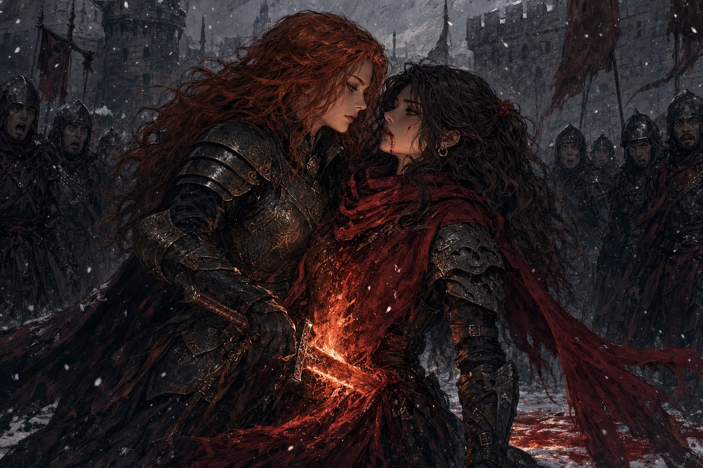
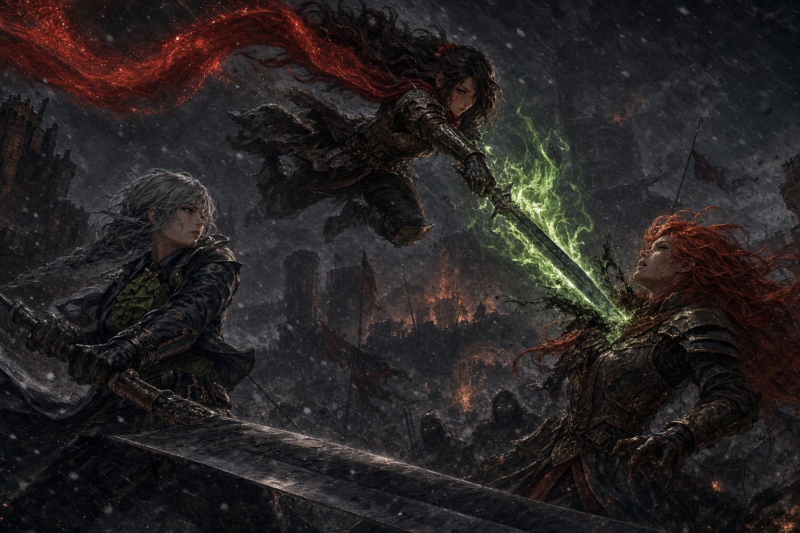

구제국력 848년 겨울. 하늘화살 성채의 안뜰에 눈이 조금씩 내렸다. 임무 위치로 흩어지기까지 한 시간쯤 남은 병사들은 일찍 모여 두런두런 잡담을 나누고 있었으나, 평온한 겉모습 아래에는 마지막 임무를 앞둔 날 선 긴장이 흘렀다. 그 사이를 작은 노트를 든 신병 하나가 이것저것 물으며 돌아다녔다. 은빛사슴대의 리아벨 말렉세이치였다.
리아벨의 수첩
“왜 군단에 들어왔어요?” 리아벨의 질문에 키예르 경은 먹고사는 게 힘들어서였노라 답했다. 알텐마크 평원 전투에서 제 부대가 전멸하고 동부 연합군의 지휘 체계를 더는 믿을 수 없어 군단으로 이적했다는 이야기에 리아벨은 “우와 정말 힘들었겠다” 하고 무지성으로 공감했다. 세상이 평화로워지면 무얼 하겠느냐, 군단에 들어오지 않았다면 무얼 했겠느냐 묻고 다니는 통에 몇몇은 질문이 너무 많다며 손사래를 쳤다. 시퀀스는 인터뷰를 거절했고, 대신 라하자르가 반쯤 썩은 입과 목으로 싱글벙글 웃으며 응했다. “저는 다르인이지만 아스리카의 자비사 역할을 하고 있습니다. 이중으로 언제 저주받을지 모르는 운명이죠. 하지만 언젠가 아스리카께서, 저의 자리를 찾아주실 것이라 믿습니다.”
서부의 소식은 무거웠다. 칼리스코 요새는 아직 버티고 있었으나, 서쪽 호반은 카로지 의원이 끝내 신념을 굽히지 않아 난민을 받지 못했고 그들 대부분이 죽었다. 파냐는 몇 주를 불타다 태울 것이 없어 스스로 꺼져가고 있었다. 생각보다 많은 언데드가 하늘화살 성채로 몰려들고 있었으니, 어쩌면 그것들은 군단을 쫓아온 것인지도 몰랐다. 조라는 나락에서 조금 늦어져 아직 당도하지 못한 채였다. 이윽고 시간이 되어 지휘관들이 들어오고, 특수병들이 병사들을 부대별로 정렬시켰다. 레이피어가 들어와 몇 마디를 건네고 짧게 말했다. “시작하자.” 다섯 갈래의 임무가 동시에 움직이기 시작했다.
다섯 개의 임무
성벽과 문을 보강하는 임무 A는 키타 데와가 불꽃이리대를 이끌었다. 이끼와 잡초가 무성하고 곳곳이 무너진 낡은 성벽 앞에서 다들 공작 솜씨가 애매해 한숨만 쉬던 차에, 호박색 밀려오는 바람이 제 재주를 박박 긁어모아 성벽과 문을 깔끔히 고쳐냈다. 언젠가 왜곡자에게 납치됐다 도망친 포레스트와 푸른 춤 철도 도우러 왔다. “우리를 언데드로부터 두 번이나 구해줬는데 돕지 않을 수 없지.” 일꾼에게는 일꾼의 방법이 있었다.
아래쪽 고개를 지키는 임무 B가 사실상의 주전장이었다. 산호빛 거둔 들판이 다리 앞을 막는 썩은것들을 도끼로 쓸어냈고, 멜로디와 보라 키리시, 올리버 자작이 사격으로 뒤를 정리했으며, 고지에 엎드린 트레버가 다리 밑에서 기습하는 까마귀들을 떨어뜨렸다. 요나카스의 심복 마르티네즈 후작이 휘파람을 불며 여유를 부린 것도 잠시, 갑자기 계절이 바뀐 듯 풍경이 뒤틀렸다. 죽은 파르라니 흔들리는 샛별이 “언데드다!” 외치며 다리로 달려오고, 죽은 블랙샷이 후퇴를 명하는 환영이었다. 파열자에게도 왜곡자에게도 없던 능력, 새 타락자 변이자의 짓이었다. 녹색으로 빛나는 눈에 물속에 잠긴 듯 떠오른 머리카락을 한 여인이 서쪽에서 걸어왔다. 마르티네즈 후작이 다리를 끊고 후퇴를 명했다. 그 혼란 속에 멜로디가 쓰러졌다. 보라는 사랑하는 이를 잃었고, 남은 삶을 군단에 바치기로 했다.
본대를 막는 임무 C는 키예르 경과 저격수로 승급한 비넷이 웃는까마귀대를 이끌고 설산 절벽을 올랐다. 수천의 언데드가 아래로 보였고, 목표까지는 낡은 다리 하나가 남아 있었다. 포식수들이 사람을 집어 던지고 바위를 굴리는 와중에, 제이드 콜라이치는 변이병 반려견 ‘쪼코’와 터그놀이를 하듯 어르며 폭탄을 설치했다. 하늘로 두 번이나 낚아채인 바니 카파티아가 죽기 직전, 산은 제 영역이라며 팔카가 나타나 포식수를 후려쳤다. 언젠가 군단이 살려준 산적 여왕이 되돌아온 것이었다. 그러나 곰고기 만담으로 부대의 웃음이던 워레니아가 포식수에게 목숨을 잃었고, 눈사태를 일으키는 대가로 쪼코 또한 제이드의 곁을 영영 떠났다. 제이드의 팔은 너덜너덜해졌다.
임무 D는 장교로 승급한 알리 프레야비치의 처음이자 마지막 지휘였다. 은빛사슴대와 함께 공성병기를 옮겨 조립하는 일이었는데, 하나는 원래 이곳에 있던 것이고 하나는 보급관이 구해온 최고급 공성병기 THE 디스트로이어였다. 접근에 실패해 성벽에 언데드가 다닥다닥 붙은 채 시작한 데다, 적들이 연달아 주사위 6을 띄우며 성벽을 넘어오는 통에 신고식이 화끈했다. “수레 밀어! 아 미친 수레 좀 밀라고 진짜!” 리아벨이 악을 썼고, 마스터의 감탄이 터졌다. 이것이 바로 TRPG였다. 임무 A를 일찍 마친 포레스트와 푸른 춤 철이 다시 도우러 오면서 은빛사슴대는 집단행동으로 시원하게 임무를 끝냈다. 정작 THE 디스트로이어는 끝내 한 발도 쏘지 못했다.
제2파를 막는 임무 E에는 붉은 발티야와 은빛 사붓한 바람, 도베르트 다 사니치가 부서진 사자대를 이끌고 성문에 섰다. 조각상의 칼 끝에 올라 머플러를 휘날리던 레이피어가 “온다” 하고 읊조렸다. 레이피어의 언데드 학살과 성벽 위의 엄호로 편안히 끝나는 듯했으나, 태엽 자객 루고스가 나타났다. 일반 공격도 흑색탄도 통하지 않고 튕겨나가듯 베어대는 부관이었다. 지난 임무의 첩보로 그 약점이 먼지와 모래임을 알아둔 것이 다행이었다. 중전사 키타가 모래바람을 일으켜 움직임을 봉쇄하고, 독자루가 터져 몸체에 틈이 벌어지자 군단병들의 집중 공격에 루고스는 마침내 무너졌다. 남은 언데드는 쉽게 정리되었다.
조라

다섯 임무가 모두 성공으로 끝나고, 임무를 마친 병사들이 성벽으로 모여들었다. 이때 조라가 병사들을 이끌고 말을 달려왔다. 그는 연합군 병사들을 다른 곳으로 보내고 홀로 레이피어에게 다가와 미소 지었다. “사도 레이피어. 노고를 치하하는 바이오.” 레이피어가 아카라의 검을 검집에 꽂으며 흐뭇하게 그를 바라보았다. 조라는 마지막 황제의 폭정을 막아낸 뒤 깨달은 바가 있다며 레이피어를 끌어안을 듯 다가가더니, 불의 검으로 그 가슴을 깊게 찔렀다. “신의 힘은 최소한으로 사용되어야 하오. 당신은 균형을 깨는 존재가 될 것이오.” 비명도 지르지 못한 레이피어의 입가에서 피가 흘렀다. “인간에게 더이상 사도는 필요하지 않소.” 검의 불길을 거두자 상처에서 피가 거세게 터져나왔고, 레이피어는 그대로 무릎부터 바닥에 쓰러졌다.
조라가 병사들을 돌아보았다. 나의 친우 오이싱그라가 군단만은 살려달라 간청했으나, 이렇게 언데드를 막는 데 쓸모가 있을 줄이야, 하고 그는 껄껄 웃었다. 이것이 마지막 임무이자 인간의 시대의 첫 임무라며 손을 내미는 그를 마주하자, 병사들의 얼굴에 화끈거리는 열기가 오르고 불안한 투쟁심이 솟았다. 그러나 조라를 공격할 수 있다는 생각은 도무지 들지 않았다. 잿불의 왕을 이긴들 백 년도 못 살 목숨이니 굳이 저항할 의미를 모르겠다는 그의 말에, 병사들은 저도 모르게 무기를 내렸다. 그를 향해 칼을 겨누려면, 스스로의 의지를 다시 세워야만 했다.
도베르트와 발티야
그 억누른 열기를 가장 먼저 터뜨린 것은 붉은 발티야였다. 사도가 눈앞에서 쓰러지자, 앞뒤를 가리지 못한 의무병은 광분에 휩싸여 조라를 향해 몸을 던졌다. 사도에게 그대로 달려들었다면 발티야 역시 그 자리에서 목숨을 잃었을 것이다. 도베르트가 그를 막아섰다. 군단의 기둥과도 같은 두 사람이 엉겨 붙었다. 한쪽은 동료의 죽음에 무너진 마음을 앞세워 밀어붙였고, 한쪽은 그 마음을 알면서도 이를 악물고 붙들었다. 짧고 격렬한 접전이었다. 발티야를 저지한 것은 조라의 손이 아니라 동료의 팔이었고, 도베르트는 그렇게 발티야를 죽음에서, 그리고 스스로를 무너뜨릴 트라우마에서 함께 끌어냈다.
자비사의 마지막
혼란에 빠진 군단 앞으로, 쉰 목소리가 다가왔다. “아스리카는 모두를 사랑하십니다. 저도 그렇고요. 하하.” 시퀀스의 부축을 받으며 간신히 걸어온 라하자르였다. 그는 싱글벙글 웃으며 자비사의 원리를 일러주었다. 자비사는 이미 죽었거나 죽을 상처를 입은 사람을 살릴 수 없다고. 의식이 완성되기 전에 자비사 자신이 먼저 죽어버리기 때문이라고. 자비사가 먼저 상처를 입어야 대상이 치유되는 것이라고. “하지만 말이죠. 여기에 아스리카의 사도가 힘을 빌려준다면요?” 그 말과 함께, 라하자르의 뒤에 서 있던 누군가가 거대한 양손검으로 조라의 불검을 튕겨냈다. “그걸 왜 당신이 정하지?” 슈레야의 뒤를 이은 아스리카의 사도, 일레나였다. 황금빛 타오르는 눈보라와 스베레나도 어느새 달려와 무기를 뽑아 들었다.
라하자르가 쓰러진 레이피어 앞에 무릎을 꿇었다. “원래 자연의 힘도, 인간의 힘도, 설령 신의 힘이라도 모두 끌어모아 발버둥치는 것이 인간입니다. 인류사에 걸쳐 인간을 겁박해온 당신이 바로, 인간의 역사를 가로막는 신인 것입니다.” 일레나가 포효하며 양손검을 마구 휘둘러 조라를 붙들어 두는 사이, 라하자르는 조용히 속삭였다. “일어나, 글리노어.” 빛의 기둥이 그와 레이피어를 감쌌다. “제가 다르를 떠나 아스리카의 자비사가 된 이유를 늘 궁금해했습니다. 신들이, 저의 자리를 이곳에 마련해준 것이군요. 저는 지금 어느 때보다도 기쁩니다.” 그의 몸 앞뒤로 피가 뿜어져 나왔다. “고마웠습니다. 모두. 그리고, 글리노어.” 자비사는 웃는 얼굴로 바닥에 쓰러졌다. 변화시키지 않고 있는 그대로 사랑하는, 다르의 이름 없는 신을 대변하는 사람의 마지막이었다.
일레나는 조라의 공격에 어깨와 배를 몇 번이나 찔리면서도 물러서지 않고, 아득길과 바라크 광산의 ‘잿불왕의 비밀’ 루트를 지나오며 알아낸 것을 조라 앞에 던졌다. 셀리만이 죽고 다르가 저주받은 지 190년, 그런데 잿불의 왕은 10년 전에야 나타났다. “왜, 셀리만은 당신에게 죽은 뒤 180년이 지나서야 나타났을까?” 조라가 알 바 아니라 하자 일레나가 검 끝을 겨눴다. “당신이.. 180년간 쥐새끼처럼 숨어있었잖아! 당신이 돌아왔기 때문에 잿불의 왕이 나타난 거지. 어쩌면, 잿불의 왕의 목적은 당신이 아닐까?” 그러니 호반도 요새도 놔두고 여기까지 온 것이며, 당신이 죽으면 잿불의 왕이 돌아갈지도 모른다는 것이었다.
붉은 궤적

고개를 숙인 채 비틀거리며, 죽었던 레이피어가 다시 일어섰다. 입에 고인 피를 뱉어내고 아카라의 검을 들어 조라를 똑바로 노려보았다. “포스타니에.” 검이 초록빛으로 빛나며 하늘화살 성채의 공기가 맑은 여름 향기로 가득 찼고, 머플러가 여름밤 별빛처럼 반짝였다. “당신이 언데드는 아니니 쓸모는 없겠지만, 그런 것처럼 싸우겠습니다, 조라.” 조라가 비웃었다. “명줄도 길군. 한 번 다 타올라 꺼진 불빛일 터.” 레이피어가 답했다. “네. 이게 마지막이겠죠.”
조라가 불의 검을 채찍처럼 휘둘러 불길의 강을 만들고 총처럼 겨눠 불꽃을 쏟아부었으나, 일레나가 번번이 앞을 가로막았다. “고마워, 라하자르. 고마워, 사도 일레나. 고마워, 군단병들. 이게 마지막 싸움이야.” 이윽고 일레나가 양손검을 치켜들자 레이피어가 그 위에 올라섰다. 일레나가 검을 전력으로 휘둘러 사도를 조라에게 날려보냈다. 머플러가 붉은 궤적을 그으며 허공을 갈랐고, 레이피어가 몸을 회전시켜 조라의 가슴을 깊게 베었다. 힘을 잃은 조라가 한쪽 무릎을 꿇었다. “지금이야! 진홍탄을 쏴!” 신들이 서로를 죽이려 만든 성물, 본래 사도를 죽이기 위한 무기인 진홍추적탄이었다. 비넷이 목숨을 걸고 엄호했고, 트레버가 비넷과 라하자르와 스러진 동료들을 떠올리며 방아쇠를 당겼다. 진홍빛이 하늘을 갈랐다. 신들의 전쟁에 고통받던 인간들의 손으로, 마침내 그 전쟁이 끝맺어지는 순간이었다. 조라는 쓰러졌다.
해
남쪽 아주 멀리, 산꼭대기에서 누군가 군단을 바라보고 있었다. 점으로 보이는 거리인데도, 거친 눈보라 속인데도 병사들은 그것이 무엇인지 알 수 있었다. 잿불의 왕이었다. 누구도 알려주지 않았고 누구도 입을 열지 않았으나 모두가 알았다. 잿불의 왕은 한참을 주시하다가 산을 내려갔다. 키예르 경이 저도 모르게 “세히사…” 하고 그 이름을 뱉고는 놀라 제 입을 틀어쥐었다. 그러나 아무 일도 일어나지 않았다. 저주는 발동하지 않았다. “뭐…야?” 하늘화살 성채를 포위하던 언데드들이 하나둘 어디론가 돌아가는 것이 보였다.
군단은 성채의 안뜰에 다시 모여 조촐한 연회를 열었다. 아직 언데드가 완전히 물러났는지 알 수 없어 취하지 않을 만큼만 마시라는 명령이 있었다. 레이피어가 단상에 올랐다. 그에게서 흘러나온 여름의 기운이 겨울 추위를 잊게 했다. “멋진 연설 같은 걸 하고 싶지만.. 나는 그런 건 못해. 미안해.” 사도가 곤란한 듯 웃었다. “긴.. 하루였지. 고마워, 모두. 당신들이 없었으면 해낼 수 없었을 거야.” 그는 피어에게 받은 머플러와 아카라의 검을 잠시 바라보았다. “군단을 좋아한 적 없었어. 증오한 적은 있었지만. 하지만 이제는.. 조금 좋아할 수 있을 것 같아. 그래도 함께 싸우자. 마지막까지.”
연회가 무르익을 무렵, 일레나가 따분한 표정으로 두 손을 머리 뒤에 얹은 채 레이피어에게 걸어왔다. “인사가 늦었네. 일레나야. 슈레야님의 뒤를 이어 아스리카의 사도가 되었어.” 그는 스베레나의 정찰을 전했다. 왜곡자 나시엘은 이곳으로 오지 않았고, 제 군세를 전부 파열자에게 넘긴 채 잿불의 왕에게 갔다는 것이었다. 왜 갑자기 잿불의 왕에게 갔는지 의아해하는 일레나에게 레이피어가 답했다. “나시엘은 잿불왕을 죽일 생각입니다.” 일레나는 한참을 생각하다 이내 그만두고 한숨을 쉬었다. “뭐, 그럼 자기들끼리 죽이도록 놔두는 게 좋겠군. 오늘의 승리를 즐기자고.” 그러고는 무언가를 건넸다. 라일락 가지였다. 피어가 슈레야에게 건넸고, 이제 슈레야의 뒤를 이은 사도가 레이피어에게 돌려주는 그 가지였다.
언데드는 물러갔을 뿐 사라지지 않았고, 죽은 이는 돌아오지 않았다. 잿불의 왕과의 마지막은 먼 훗날로 유예되었다. 그러나 이 밤만은, 살아남은 이들이 별빛 아래에서 잔을 들었다. 봄에 나타난 예언자가 피워낸 불꽃은 여름의 사도에게 이어졌고, 가을과 겨울을 지나 끝내 꺼지지 않았다. 다시 붙은 불이었다.